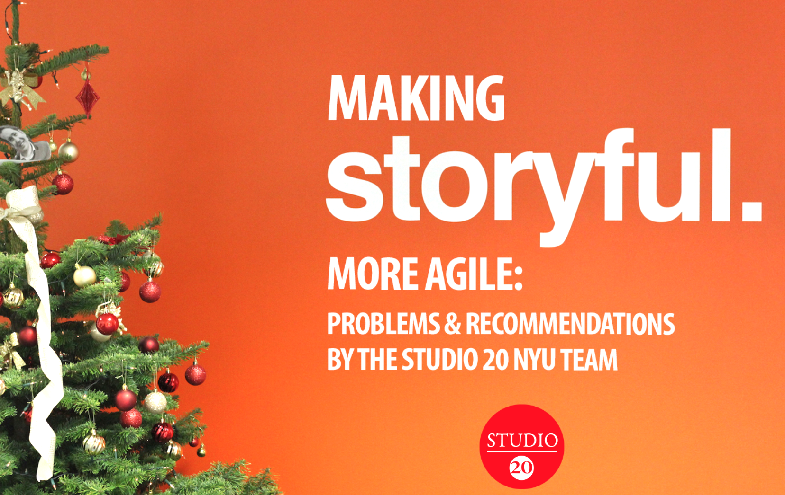

Overview
Studio 20 teamed up with Storyful to answer this question: what does it take to create a more agile newsroom? We interviewed key people from Storyful's staff to study the company's proudction routine and see what stood in the way of creating a more agile newsroom. We also interviewed a few experts in the agile, like
Yuri Victor of Vox Media and
Brian Boyer of NPR, to understand their experience introducing agile to an editorial environment. Once we had a good grasp of the problems, we put our heads together to create a list of recommendations for introducing agile.
Background
The term "agile" is borrowed from computer programming, where it refers to lightweight methods for developing new software through rapid prototyping, flexible requirements, frequent check-ins with the eventual users of the product and quick, adaptive (that is, agile) reactions to discoveries made en route.
Storyful is both a technology company and a 21st century wire service. While the tech team is steeped in agile methods, the news operation - like its counterparts in other companies - is mostly consumed with daily production: finding great stories and getting it right. It has yet to absorb the advantages of the more agile approach that the product team has been benefitting from.
Conclusions
Based on our research, we came up with a few recommendations for Storyful and other news companies looking to create a more agile newsroom.
-
Create an internal blogger position, like NPR's Social Sandbox. This way, people can feel connected to what's going on throughout the entire company. The blogger would be able to create a sense of connectedness throughout the organization by spreading crucial knowledge and lessons across all departments.
-
Get everyone in the organization on the same sharing tools, like Slack or Google Hangouts, to eliminate any disconnect between teams.
-
Physically reorganize the workspace - it's a great way to integrate work. Many news companies, like The Wall Street Journal and the New York Times, have already started adopting this in their spaces.
-
Incorporate agile methods into training for everyone, not just product teams. This way all employees have a strong grasp of how Storyful operates and their culture.
-
Find ways to release from the "hamster wheel", i.e. the never ending news cycle. This could come in the form of Hack weeks, like at Vox Media, scheduled release time or work rotation policies. It's imperative for innovation to have some time to look above and beyond daily demands.
-
Make retrospective meetings forward-thinking. Use the retrospectives to reflect on "what can be done better?" and "what went wrong?" instead of only highlighting accomplishments. Use that time to reorganize work and reflect on big issues that impacted work.
Tools Used
For this project, my number #1 tool was my brain! I did a lot of critical thinking while conducting interviews and doing research. It's always cool to be able to list off all of the programs and languages I used for a project, but understanding the problems and being able to think through a solution (or solutions) is more important than any other developmental phase (that's why strategy documents are important!). I also used Google Hangouts quite a bit, and good, old fashioned interviewing skills.